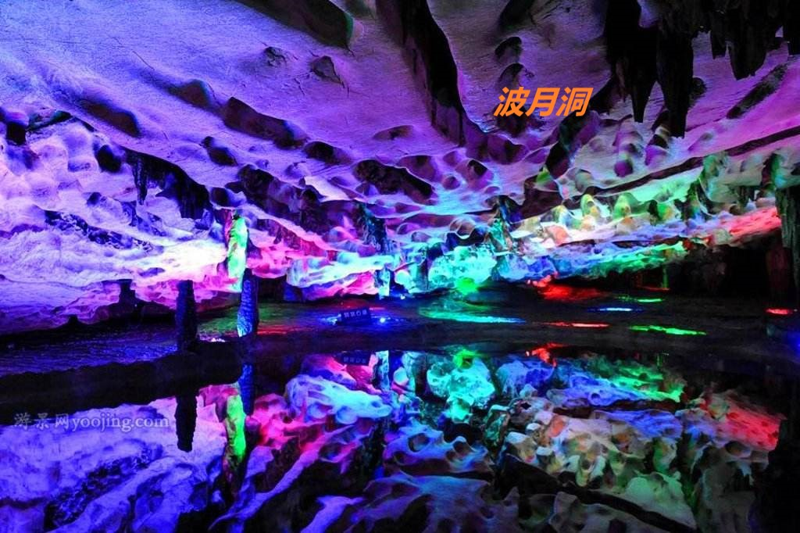
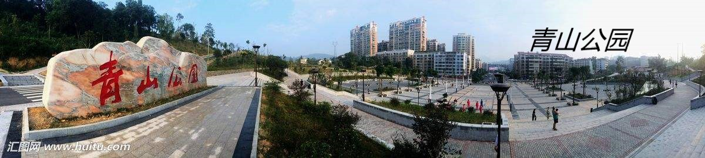
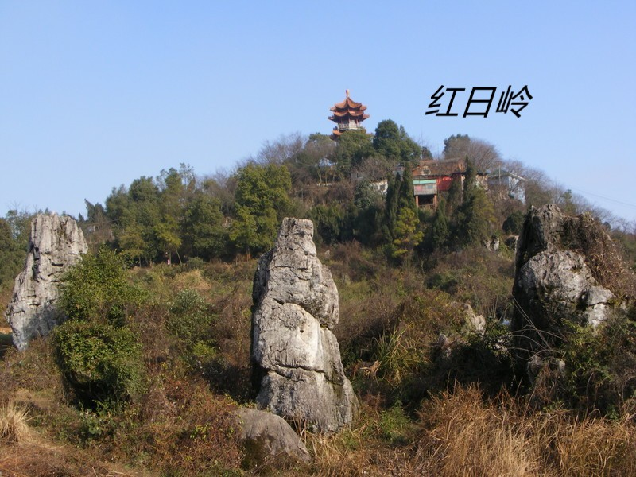

波月洞是湖南著名景区之一，坐落在湖南省冷水江市
大乘山底下，波月洞是一个世界熔岩博物馆。里面熔岩密布，石柱高耸，组成了各种美妙的景观。同时波月洞是世界上鹅杆最多的地方，被称为
世界之最。本景点属于已经进行过商业开发的溶洞景观经典，在冷水江地区类似的溶洞景观尚未进行商业开发不收取门票的还有位于潘桥乡洪云
村的红云岩风景区。

青山公园处于湖南省冷水江城区南面，隔江与
红日岭、美女山相望，整体形成“三面江山抱城廓，四面山势锁烟霞”之城市风水格局，是布溪组团天然的绿色屏障。
公园占地面积约2.6平方公里，核心景区为1.7平方公里，是一座以天然林为主体，依山建成的城市综合公园，公园生态资源丰富优良，次级
原生森林覆盖率达95%以上，山上的树木，种类繁多，四季常青。其中有乔灌木26类185种，如樟树、松柏、梓树、金银花等；野生动物有21科
32种，如穿山甲、黄鼠狼、角雉、野兔。
紫鹊界梯田景区属于雪峰山脉奉家山系的中部，
海拔1236米，最高峰海拔1585.2米，以紫鹊界梯田为中心，共有梯田56000多亩，其中集中连片的梯田在2万亩以上，主要分布于水车镇锡溪
管区，从海拔500米到1100米之间，共400余级。紫鹊界梯田始于秦汉，盛于宋明，至今已有2000余年历史，是苗族、瑶族、侗族、汉族等多
民族历代先民共同创造的劳动成果，是南方稻作文化与苗瑶山地渔猎文化交融揉合的历史遗存。娄底市紫鹊界梯田景区，为国家AAAA级旅游景
区、国家自然与文化双遗产、国家水利风景区、国家重要农业文化遗产。

红日岭位于冷水江市城区内，从1984年起，冷水
江市政府在其上修建了一批人文景观和建筑物，登至顶阁可俯瞰冷水江市全景。阁四周砌汉白玉石栏，雕刻工艺精湛。红日岭上还建有二亭二
桥及三条长达1100多米的石板路，有盆景园、园中林，设有餐饮、歌舞娱乐设施，是市民平日娱乐休闲、健身锻炼的去处。